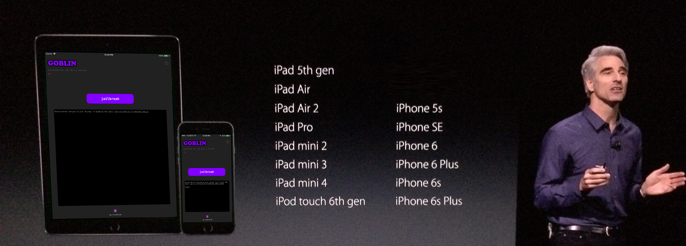

wip jailbreak for iOS 10.3 - 10.3.3
supported devices:
download:
SHA1: 36ce699095441f0bc2533b4d021b4c46807b4706
SHA1: b370789e866f0125a66dbc48ef24f4ca00ed9b0b
install with Cydia Impactor
changelog:
release candidate 2
- fix respring panic
- uninstalls dropbear, you can install OpenSSH instead
- fix Cydia icon not always appearing
- supports more device/OS version combos
release candidate 1
- fixed bad sandbox patch
known issues:
• Touch ID stops working in third-party apps while jailbroken
credits:
v0rtex kernel exploit by Siguza, vuln by Ian Beer, POC by windknown
kpp bypass, sandbox, codesigning from yalu102 by Luca Todesco
additional sandbox work from h3lix by tihmstar
patchfinder from extra_recipe by Xerub
additional patchfinder work from async_wake_fun by ninjaprawn
Cydia by Jay Freeman (saurik)
notes:
Jailbreaking your iPhone, iPod or iPad is easy and fun! Unlock the true potential of the magical supercomputers Apple has created by esacping their walled garden.
Have you ever wanted a Unix desktop in your pocket? But with better graphics? And a wicked Retina® display with capacitive multi-touch? Well you are in luck today!
Once you have jailbroken your iDevice you have the freedom to explore a new world of tweaks, themes, applications and tools. Give your device some personal style! Enjoy the happiness every time you glance at it's newfound beauty and smile at it's newfound functionality.
Is it safe? Safe enough. Just be mindful of what you install and what you try to modify.
Using the included Cydia software by Jay Freeman (aka Saurik) you can choose from thousands of user-submitted software and theme packages. Installing and unintalling things is a breeze thanks to Cydia, which uses Debian's APT package management system.
This is (and always will be) free software. The only source of income generated is the banner AdSense puts here so I can afford to keep my laptop powered long enough to make things for you guys. I love you all.